ورقة تأسيسية في الترجمة الآلية
الانتباه هو كل ما تحتاجه
تشريح المعمارية التي غيّرت الترجمة الآلية عام ٢٠١٧ ثم صارت أساس النماذج اللغوية الكبيرة.
نُشرت عام 2017
ثمانية مؤلفين

طابور لا ينتهي
الشبكات التكرارية تقرأ الجملة كلمةً بعد كلمة، فلا تستطيع العمل بالتوازي.
كل كلمة تنتظر التي قبلها.
المدخلات
كل كلمة تنظر إلى الجميع
- الاستعلام يسأل عمّا يبحث عنه.
- المفتاح يعلن ما يحمله.
- القيمة هي ما يُنقل فعلًا.
رؤوس متعددة
ثمانية رؤوس تنظر إلى الجملة من زوايا مختلفة في الوقت نفسه.
ثم تُدمج النتائج في متجه واحد.
Multi-Head
الموضع بلا تكرار
موجات الجيب وجيب التمام تمنح كل موضع بصمة فريدة.
فتعرف الشبكة ترتيب الكلمات دون أن تقرأها بالتتابع.
النتيجة
أفضل جودة ترجمة في وقت تدريب أقل بكثير.
BLEU 28.4 على الإنجليزية إلى الألمانية.
ما بعد الورقة
كل نموذج لغوي كبير اليوم يقف على هذه الفكرة.
من الترجمة إلى الصور والصوت والشيفرة.